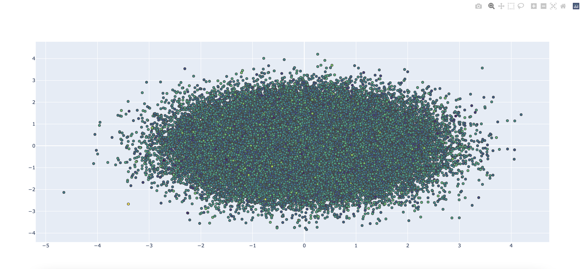

Get Started
Line Graphs
Bar Graphs
Histograms
Scatter Plots
Pie Charts
Violin Plots
Box Plots
Scatter plots display values of up to three variables. They usually show the spread of data (the concentrated and non-concentrated points) of data.
For simple scatter plots, we can use our usual express module from the plotly library.
This time, we will work on the iris dataset provided by the library module.
Let's create the scatter plot.
Here, we see a simple but beautiful scatterplot.
For complex or very large scatter plots, a different module is used. Let us start by importing this module. Instead of importing a large dataset, we will create our own by using NumPy.
Let us initialize our figure.
Refer to the comments beside the code to get an idea of what those lines of code mean.
This graph will be different from the one shown above because axis variables (values of the x and y-axis) are random.